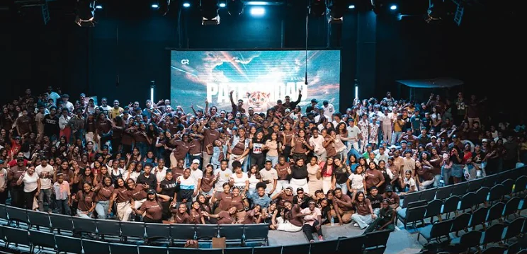
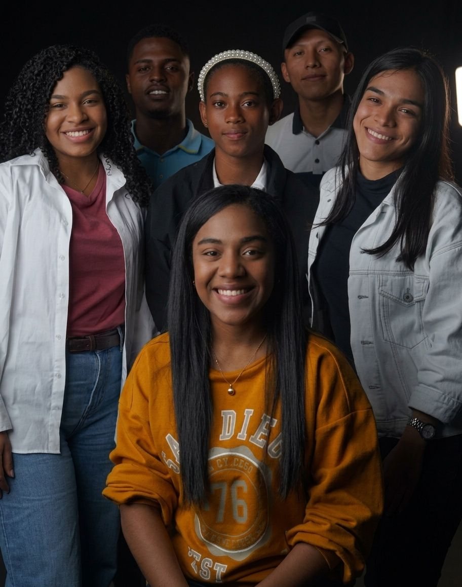

Generación Reformadora - Ciudad GP
Una Generación encendida por Su Presecia
Somos Generación Reformadora, jóvenes llamados a conocer a Cristo y transformar nuestra generación.
¡Unete a esta gran Familia!CONOCE NUESTRA ESENCIA
Somos Generación Reformadora
Una generación marcada por Su presencia.
Somos una generación apasionada por Jesús, que anhela vivir en intimidad con el Espíritu Santo y llevar Su presencia a cada lugar.
Creemos en jóvenes que no se conforman con lo común, sino que responden al llamado de Dios para ser luz, transformar vidas y marcar su generación.

NUESTRA COVERTURA ESPIRITUAL
Nuestros Pastores
Moisés e Ingrid de Bell
Fundadores de la Casa Internacional La Gloria Postrera (Ciudad GP) y del movimiento Generación Reformadora. Su liderazgo nace de una visión de Dios: operar en esta generación bajo una unción de reforma, estableciendo Su poder sobrenatural y llevando la mentalidad del Reino a hombres, mujeres y niños.
Como nuestra cobertura espiritual, nos impulsan a romper con la religiosidad, vivir conforme al diseño original de Dios y levantar una generación que manifieste Su gloria en la tierra.
NUESTROS PASTORES JUVENILES
Amigos del Espíritu Santo
Apasionados por avivar una generación.
Samir y Pielangely Sugaste
Líderes apasionados por la presencia de Dios, comprometidos con levantar una generación que arda de amor por Cristo. Su corazón es guiar a los jóvenes hacia una relación genuina con el Espíritu Santo, afirmando su identidad y propósito en Dios.
Liderazgo que edifica
Nuestros Líderes Pilares
Comprometidos con la visión, firmes en el llamado.
Detrás de cada generación que se levanta, hay líderes dispuestos a servir, acompañar y edificar vidas. Nuestros Líderes Pilares son parte fundamental de Generación Reformadora, trabajando con amor, entrega y compromiso con la visión de nuestra casa.
Luis Cuero
Pasión y firmeza
El pilar de los pilares
Melitza Ramos
Sabiduría y organización
Nadia Samuels
Fortaleza
Alba López
Visión y Anticipación
Helen Haus
Intensidad y Constancia
Más que un Movimiento
Así vivimos GR
Cada encuentro es una oportunidad para buscar Su Presencia, crecer en nuestra fe y vivir experiencias que transforman nuestras vidas.
Alabanza
Oración
Comunidad
Encuentros GR

Congreso anual de Generación Reformadora
ONE WAY
Jesús, el único camino.
«Yo soy el camino, y la verdad, y la vida; nadie viene al Padre, sino por mí».
Juan 14:6 · RVR1960
Cada año, Generación Reformadora celebra ONE WAY, un congreso juvenil fundamentado en la verdad de que Jesucristo es el único camino al Padre.
Un tiempo para reunir a una generación alrededor de Su Palabra, buscar la presencia del Espíritu Santo y afirmar nuestra fe en Cristo, siendo transformados por Su verdad y llamados a vivir conforme al diseño original de Dios.
HAY UN LUGAR PARA TI
Sé parte de Generación Reformadora
En Generación Reformadora contamos con distintas redes, donde doncellas y varones son acompañados en cada etapa de su crecimiento, fortaleciendo su relación con Dios y afirmando su identidad en Cristo.

RA
Red Adulta
Doncellas y varones que crecen en madurez espiritual, identidad y propósito en Cristo.
RM
Red Media
Doncellas y varones que fortalecen su fe y desarrollan una relación genuina con el Espíritu Santo.
RP
Red Pequeña
Doncellas y varones que comienzan a conocer a Jesús y a establecer fundamentos en Su Palabra.
¡Queremos conocerte!
No importa en qué etapa te encuentres, hay una red esperando por ti.
QUIERO SER PARTE DE GRQUEREMOS RECIBIRTE
Encuéntranos
Somos parte de la Casa Internacional La Gloria Postrera (Ciudad GP). Queremos invitarte a conocer nuestra casa, compartir con nosotros y crecer juntos en la presencia de Dios.
Sede Colón
Plaza 4 Altos, Colón, Panamá
Servicios generales de Ciudad GP:
- Martes · 7:00 p. m.
- Viernes · 7:00 p. m.
- Domingo · 10:00 a. m.
Sede Panamá
Juan Díaz, Iglesia Tabernáculo de la Fe (TDF)
Si vives en Panamá, puedes asistir a TDF:
- Viernes · 7:00 p. m.
- Domingo · 10:30 a. m.